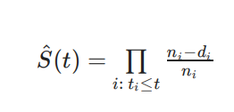
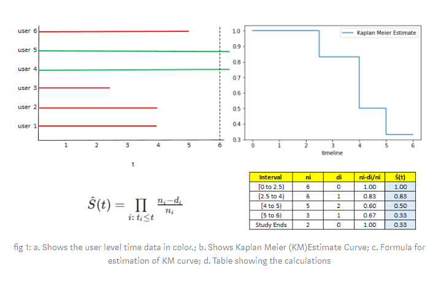
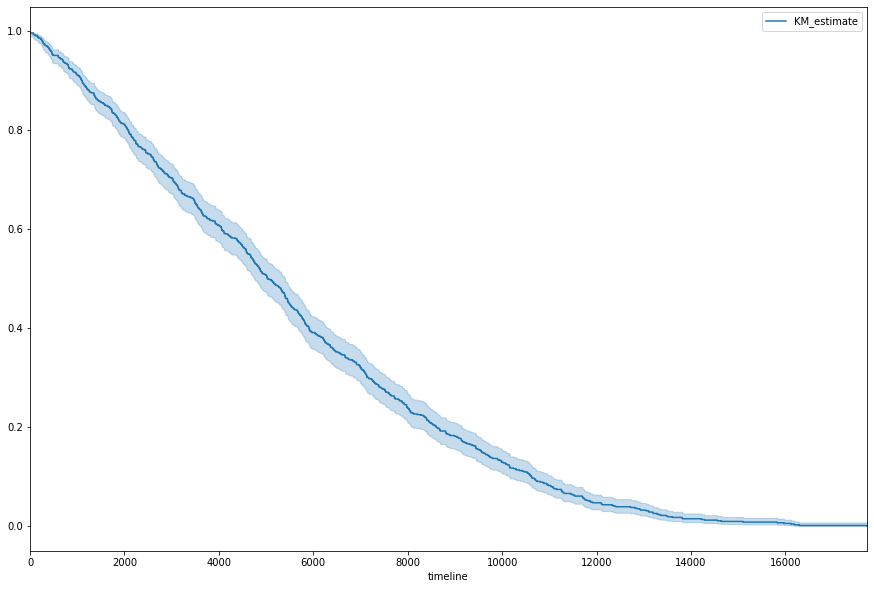
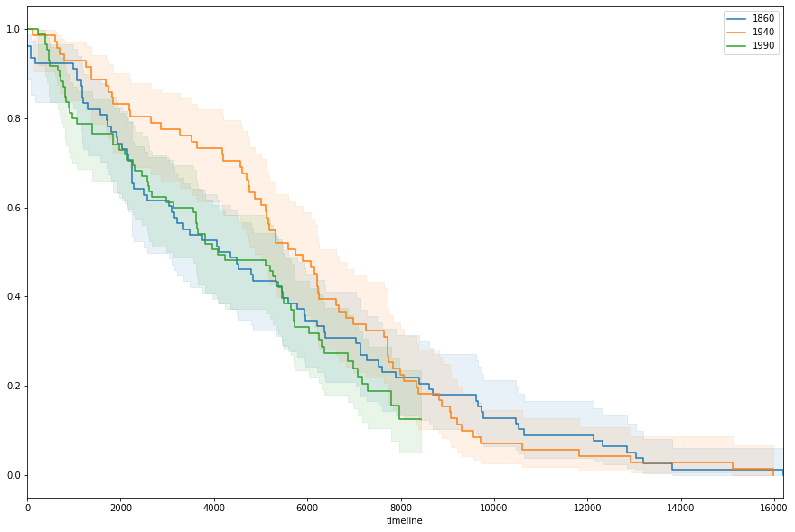

Kaplan-Meier Estimate
So before we get underway with our fancy-pants tuned models to approximate our survival/hazard equations, it’s worth highlighting a simple estimator that provides a useful, if naive, approximation with minimal headache.
This straight-forward equation is called the Kaplan-Meier Estimate and is used as a proxy for evaluating the Survival Function at a given point in time.
from IPython.display import Image
Image('images/km_eq.PNG')
The n_i term is the population still at risk right before time i (not yet swallowed by F(t)), and d_i is the number of events that occur on time i.
A couple things worth noting here:
- We use product, not sum, here in order to account for the joint probability of surviving at time
i, as well as surviving through all times before - This equation cleanly handles data that drops out due to an event obsevation or censoring. Similarly, it considers data with no established terminus for the duration of the obseration.
This blog-post works through a toy example on six points of data.
Image('images/km_simple.PNG')
On Actual Data
At scale, these look a lot more sophisticated, and with hardly any additional effort.
Let’s pull a dataset of term-lengths of Canadian Senators from the lifelines library.
%pylab inline
from lifelines.datasets import load_canadian_senators
data = load_canadian_senators()
data.head()Populating the interactive namespace from numpy and matplotlib
| Name | Political Affiliation at Appointment | Province / Territory | Appointed on the advice of | Term (yyyy.mm.dd) | start_date | end_date | reason | diff_days | observed | |
|---|---|---|---|---|---|---|---|---|---|---|
| 0 | Abbott, John Joseph Caldwell | Liberal-Conservative | Quebec | Macdonald, John Alexander | 1887.05.12 - 1893.10.30 (Death) | 1887-05-12 00:00:00 | 1893-10-30 00:00:00 | Death | 2363 | True |
| 1 | Adams, Michael | Conservative (1867-1942) | New Brunswick | Bowell, Mackenzie | 1896.01.07 - 1899.01.01 (Death) | 1896-01-07 00:00:00 | 1899-01-01 00:00:00 | Death | 1090 | True |
| 2 | Adams, Willie | Liberal Party of Canada | Northwest Territories | Trudeau, Pierre Elliott | 1977.04.05 - 2009.06.22 (Retirement) | 1977-04-05 00:00:00 | 2009-06-22 00:00:00 | Retirement | 11766 | True |
| 3 | Aikins, James Cox | Liberal-Conservative | Ontario | Royal Proclamation | 1867.10.23 - 1882.05.30 (Resignation) | 1867-10-23 00:00:00 | 1882-05-30 00:00:00 | Resignation | 5333 | True |
| 4 | Aikins, James Cox | Liberal-Conservative | Ontario | Bowell, Mackenzie | 1896.01.07 - 1904.08.06 (Death) | 1896-01-07 00:00:00 | 1904-08-06 00:00:00 | Death | 3133 | True |
There’s a bit more information than we really need in this DataFrame, so we’ll follow lifelines convention and stuff the durations and event observations into their own Series– T and E, respectively
T = data['diff_days']
E = data['observed'].map({True: 1, False: 0})Before we fit the Kaplan-Meier Estimator to the data, let’s get a peek at some of the data.
There are a ton of records
len(data)933
And after a bit of inspection, I found that there was a good mix of “observed” and “not observed” event data between 1000 and 2000 days. So we’ll narrow down to that timeline window and sample down to 50 records, to make a neater lifetime plot.
from lifelines.plotting import plot_lifetimes
narrowed = (data[(data['diff_days'] > 1000)
& (data['diff_days'] < 2000)]
).sample(n=50, random_state=0).reset_index()
narrowed_T = narrowed['diff_days']
narrowed_E = narrowed['observed']
fig, ax = plt.subplots(figsize=(12, 10))
plot_lifetimes(durations=narrowed_T,
event_observed=narrowed_E);
Fitting the Curve
Actually fitting the data is super easy.
While the lifelines.fitters.BaseFitter object doesn’t directly inherit from anything in the sklearn space, the interface is more or less the same. We just need to specify the Series values that we want to use to fit durations and event_observed.
from lifelines import KaplanMeierFitter
kmf = KaplanMeierFitter()
kmf.fit(durations=T, event_observed=E)<lifelines.KaplanMeierFitter:"KM_estimate", fitted with 933 total observations, 99 right-censored observations>
And the object even comes, batteries-included, with a neat plotting interface.
fig, ax = plt.subplots(figsize=(15, 10))
kmf.plot(ax=ax);
Where the lighter area around the curve represents the 95% Confidence Interval, achieved via the exponential Greenwood (says the lifeline docs).
Additionally, the model object gives us a bunch of other statistical goodies.
for fn in dir(kmf):
if (fn[-1] == '_' and fn[0] != '_'):
print(fn)conditional_time_to_event_
confidence_interval_
confidence_interval_cumulative_density_
confidence_interval_survival_function_
cumulative_density_
median_survival_time_
survival_function_
As an Analytical Tool
The Kaplan-Meier Estimator is obviously useful for getting a handle on the basic shape of the survival curve for your population. But with surprisingly-little adjustment, it also provides analytical insight between different segments of your population.
For instance, suppose we were interested in comparing the survival curves of sentators, based on which decade they were elected in. Getting at those values is simply some clever pandas datetime stuff on the field start_date, which reveals the decades for which we have the most data.
import pandas as pd
decade = pd.to_datetime(data['start_date']).dt.year // 10 * 10
decade.value_counts()1990 85
1860 78
2000 76
1940 71
1970 67
1910 67
1960 65
1900 60
1950 51
1920 51
1930 49
1890 48
1880 47
1870 47
1980 41
2010 30
Name: start_date, dtype: int64
To better illustrate change over time, we’ll space out which decades we grab from: 1860, 1940, 1990
Then, plotting them together simply involves making a shared plot, then fitting the same estimator and plotting the results– three times.
fig, ax = plt.subplots(figsize=(15, 10))
kmf = KaplanMeierFitter()
kmf.fit(T[decade==1860], E[decade==1860], label='1860')
kmf.plot(ax=ax, ci_alpha=.1)
kmf.fit(T[decade==1940], E[decade==1940], label='1940')
kmf.plot(ax=ax, ci_alpha=.1)
kmf.fit(T[decade==1990], E[decade==1990], label='1990')
kmf.plot(ax=ax, ci_alpha=.1);
And almost immediately, you’ll notice that the senators elected in the 40s enjoyed a much kinder survival rate between days 3 and 5 thousand. However to better pick apart why this might be, we’d be better-served using other approaches.